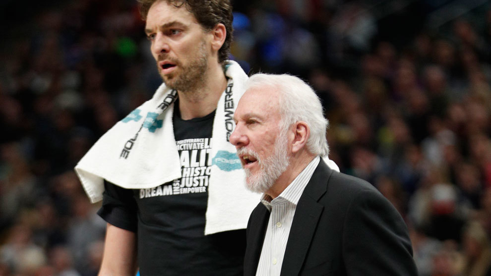

NOTICIAS NBA
Volver a noticias de fútbol...
Embiid VS Bamba.
El duelo entre Philadelphia 76ers y Orlando Magic dejó una de las imágenes de la pretemporada en la NBA cuando Mo Bamba, novato de 2,36 de envergadura, encaró el aro de los Sixers sin miedo a encontrarse con Joel Embiid por el camino. El camerunés trató de taponar su intento de mate, pero se quedó con las ganas y se llevó el póster de la noche.
Leer artículo completo...Vamos a sorprender de manera positiva.
La marcha del base francés Tony Parker de los Spurs de San Antonio dejó al joven DeJounte Murray como el elegido por el entrenador Gregg Popovich para que sea el nuevo director del juego del equipo de cara a la nueva temporada 2018-2019 de la NBA.El objetivo de Popovich es cambiar por completo el ritmo de juego que pueda tener el equipo de cara a la transición en ataque y para eso "confía" en la velocidad y el poder físico que aporta Murray, de apenas 22 años, que llega para cumplir su tercera temporada en la NBA."Soy consciente que todo el mundo está hablando de lo que podemos hacer este año en el campo cuando movamos la pelota ya sin estar Tony (Parker) ni Manu (Ginóbili), y no tengo ninguna duda que vamos a sorprender de manera positiva", comentó Popovich, que se refirió concretamente al nuevo papel que va a tener dentro del equipo el joven Murray.Popovich adelantó que le permitirá libertad para que mueva el balón y pueda aprovechar al máximo todo el poder físico y la constitución atlética que posee."Seguro, que correrá con libertad, lo que significa que el resto de los compañeros deben responderle de la misma manera si quieren participar en las jugadas", declaró Popovich. "No hay ciencia oculta para eso, debes acompañar en la transición al director del juego para tener oportunidad de recibir el balón".Popovich también reconoció que con este cambio algunos de los compañeros de Murray les va a tocar correr como "nunca" antes lo habían hecho para seguir su ritmo."Si ellos desean obtener el balón tendrán que correr al mismo nivel que lo haga Murray, así de simple", sentenció Popovich, quien dijo estar muy "ilusionado" con lo que puede hacer la nueva versión del equipo que trabajan de cara a la nueva temporada que comenzará este mismo mes.Los Spurs traspasaron a su estrella el alero Kawhi Leonard a los Raptors de Toronto y a cambio recibieron al escolta DeMar DeRozan, junto con otro joven talento, el pívot austríaco Jakob Poeltl, de 22 años.
Clasificación NBA.
-
CONFERENCIA ESTE
- Boston Celtics
- Brooklyn Nets
- New York Knicks
- Philadelphia 76ers
- Toronto Raptors
- Chicago Bulls
- Cleveland Cavaliers
- Detroit Pistons
- Indiana Pacers
- Milwaukee Bucks
- Atlanta Hawks
- Charlotte Hornets
- Miami Heat
- Orlando Magic
- Washington Wizards
-
CONFERENCIA OESTE
- Golden State Warriors
- Los Angeles Clippers
- Los Angeles Lakers
- Phoenix Suns
- Sacramento Kings
- Dallas Mavericks
- Houston Rockets
- Memphis Grizzlies
- New Orleans Pelicans
- San Antonio Spurs
- Denver Nuggets
- Minnesota Timberwolves
- Oklahoma City Thunder
- Portland Trail Blazers
- Utah Jazz
Creado por Raúl Ramírez